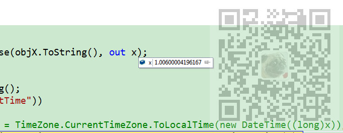
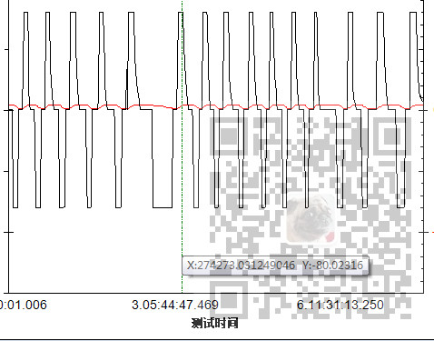
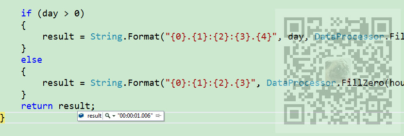

原文出处:本文由博客园博主霸道流氓提供。
原文连接:https://www.cnblogs.com/badaoliumangqizhi/p/11647769.html
原文连接:https://www.cnblogs.com/badaoliumangqizhi/p/11647769.html
场景
表示时间的数据格式为浮点数，如下：

需要将其格式化为{H:min:s.ms}格式的字符串，效果如下：

注：
博客主页：
https://blog.csdn.net/badao_liumang_qizhi
关注公众号
霸道的程序猿
获取编程相关电子书、教程推送与免费下载。
实现
/// <summary>
/// 把浮点数格式化为{H:min:s.ms}格式的字符串
/// </summary>
/// <param name="f">要格式化的浮点数</param>
/// <returns>返回格式化后的字符串</returns>
public static string FormatFloatToDateTimeString(double f)
{
string result = String.Empty;
int day = (int)f / 3600 / 24;
int hour = ((int)f / 3600 % 24);
int min = ((int)f % 3600) / 60;
int sec = (int)f % 60;
int ms = (int)Math.Round((f - (int)f) * 1000, 0, MidpointRounding.AwayFromZero);
if (day > 0)
{
result = String.Format("{0}.{1}:{2}:{3}.{4}", day, DataProcessor.FillZero(hour.ToString(), 2), DataProcessor.FillZero(min.ToString(), 2), DataProcessor.FillZero(sec.ToString(), 2), DataProcessor.FillZero(ms.ToString(), 3));
}
else
{
result = String.Format("{0}:{1}:{2}.{3}", DataProcessor.FillZero(hour.ToString(), 2), DataProcessor.FillZero(min.ToString(), 2), DataProcessor.FillZero(sec.ToString(), 2), DataProcessor.FillZero(ms.ToString(), 3));
}
return result;
}
效果
